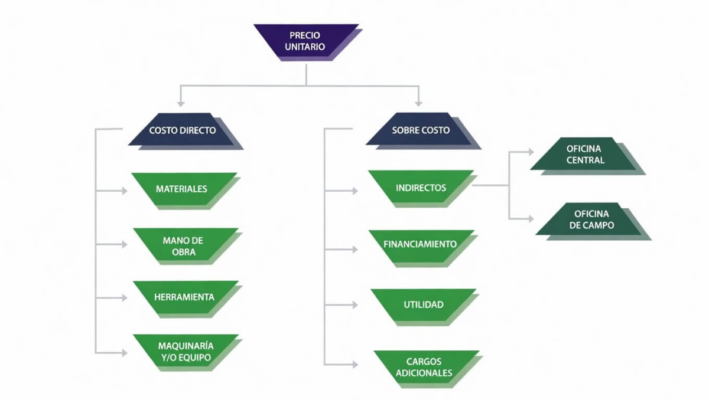

Si trabajas en construcción, tarde o temprano te enfrentas a la misma pregunta: ¿cuánto cuesta realmente ejecutar este concepto de obra? No "más o menos", sino el número exacto que te permita presupuestar sin perder dinero ni quedar fuera de una licitación por inflar precios.
La respuesta está en el análisis de precios unitarios (APU). En esta guía te explico qué es, cómo se compone, cuál es su fórmula y cómo elaborar uno en 7 pasos, con un ejemplo real de un muro de block calculado partida por partida.
¿Qué es el análisis de precios unitarios (APU)?
El análisis de precios unitarios es una herramienta técnica fundamental que permite calcular el costo real de cada concepto de obra de manera detallada y ordenada. Su objetivo es desglosar todos los recursos necesarios —materiales, mano de obra y maquinaria— para ejecutar una actividad específica, expresando ese costo en función de una unidad de medida definida (metro cuadrado, metro lineal, pieza, etc.).
En el contexto mexicano, donde los precios varían según la región, el tipo de proyecto y las condiciones del mercado, dominar el APU es indispensable para elaborar presupuestos confiables, participar competitivamente en licitaciones y garantizar la rentabilidad de cualquier obra.
Componentes del precio unitario
Un precio unitario bien estructurado se integra por elementos que debes comprender para que el APU refleje la realidad del proyecto.
1. Materiales
Incluyen todos los insumos físicos requeridos. Al cuantificarlos, considera tres factores críticos:
- Precio actualizado: los costos fluctúan constantemente; usa cotizaciones vigentes.
- Mermas y desperdicios: cada material tiene su porcentaje propio (el block suele contemplar entre 3% y 5% adicional).
- Transporte y almacenamiento: el flete y el manejo en obra forman parte del costo real.
2. Mano de obra
Se calcula a partir del salario real del trabajador, que va más allá del salario base. Debe incluir prestaciones de ley (vacaciones, aguinaldo, prima vacacional), cuotas al IMSS e INFONAVIT, y el rendimiento real en campo. El salario real puede ser significativamente mayor al tabulado, por lo que subestimarlo es uno de los errores más frecuentes y costosos.
3. Maquinaria y equipo
El costo no se limita a la renta o el combustible. Se determina mediante el costo horario, que integra costos de operación (combustible, lubricantes, operador), mantenimiento preventivo y correctivo, y depreciación del equipo. Es especialmente relevante en movimiento de tierras, cimentaciones y trabajos especializados.
La fórmula del precio unitario
La fórmula general del precio unitario es:
PU = CD + CI + CF + U
CD = Costo Directo (materiales + mano de obra + herramienta + maquinaria y/o equipo)
CI = Costos Indirectos (administración de oficina central y campo)
CF = Costo de Financiamiento (capital invertido durante la ejecución)
U = Utilidad (margen de ganancia del contratista)
Esta estructura garantiza que el precio unitario no solo cubra los costos de ejecución, sino también la operación del negocio y una utilidad justa.

Cómo hacer un APU: 7 pasos prácticos
Paso 1 — Definir el concepto de obra
Establece con claridad qué actividad vas a presupuestar y su unidad de medida. Ejemplo: "Muro de block de 15 cm, acabado aparente — m²".
Paso 2 — Establecer el procedimiento constructivo
Describe cómo se ejecutará el trabajo: qué herramientas se usan, cuántos trabajadores intervienen, en qué orden se realiza. Esto define la base técnica del análisis.
Paso 3 — Identificar materiales, mano de obra y equipo
Lista todos los recursos con sus especificaciones. No omitas insumos menores como herramienta menor, agua o aditivos; aunque pequeños, afectan el costo final.
Paso 4 — Calcular rendimientos
Determina cuánto produce cada recurso por unidad de tiempo. En condiciones normales, una cuadrilla de un oficial albañil más un ayudante produce alrededor de 10 m² de muro de block por jornada de 8 horas, lo que equivale a un factor de 0.10 jornadas por m². El rendimiento es el corazón del APU y debe ajustarse a las condiciones reales: altura de muro, temperatura, tipo de andamio y experiencia de la cuadrilla.
Paso 5 — Obtener los costos directos
Multiplica las cantidades de cada insumo por su costo unitario. La suma de materiales + mano de obra + herramienta + maquinaria y/o equipo da el Costo Directo (CD).
Paso 6 — Agregar indirectos, financiamiento y utilidad
Aplica los porcentajes correspondientes de costos indirectos, financiamiento y utilidad sobre el costo directo para obtener el precio unitario final de contrato.
Paso 7 — Validar y actualizar
Revisa que los precios sean vigentes y que los rendimientos correspondan a las condiciones reales del proyecto. Un APU desactualizado puede comprometer toda la estimación.
Tip profesional: apoyarse en catálogos de costos directos de referencia (como los de la CMIC o instituciones estatales) acelera el proceso y mejora la precisión, especialmente al trabajar con múltiples conceptos. Herramientas como OPUS están diseñadas para respaldar y agilizar este tipo de análisis.
Errores comunes en el APU que debes evitar
- No considerar mermas: subestimar el desperdicio de materiales reduce el margen de utilidad de forma silenciosa.
- Usar salarios incorrectos: presupuestar con el salario tabulado sin incluir prestaciones y cargas sociales puede generar pérdidas reales.
- Omitir costos indirectos: los gastos de administración y supervisión existen aunque no se "toquen" en obra; no incluirlos los hace invisibles pero no los elimina.
- No actualizar precios: un APU elaborado meses atrás puede no reflejar la volatilidad del mercado de materiales.
- Rendimientos teóricos vs. reales: usar tablas genéricas sin ajustarlas a las condiciones del proyecto produce estimaciones poco confiables.
Ejemplo práctico: APU de muro de block de 15 cm — m²
A continuación, un análisis de precio unitario real de un muro de block de concreto hueco de 15×20×40 cm, asentado con mortero cemento-arena 1:4, acabado común. Incluye suministro de materiales, cortes y desperdicios, acarreos, andamios, mano de obra, herramienta y equipo.
Materiales
| Descripción | Cant. | Costo unit. | Total |
|---|---|---|---|
| Block concreto hueco 15×20×40 cm | 12.00 pza | $18.80 | $225.60 |
| Block ½ concreto hueco 15×20×20 cm | 2.00 pza | $13.00 | $26.00 |
| Cemento Portland tipo II (mortero 1:4) | 0.0064 ton | $5,155.17 | $33.00 |
| Arena puesta en obra (mortero 1:4) | 0.0192 m³ | $366.67 | $7.04 |
| Agua en pipa (mortero 1:4) | 0.0048 m³ | $260.46 | $1.25 |
| Total materiales | $292.89 |
Mano de obra (1 oficial albañil + 1 ayudante)
| Concepto | Base | Total |
|---|---|---|
| Oficial albañil | 1 jornal | $833.33 |
| Ayudante general | 1 jornal | $583.33 |
| Carga social (45% MO) | sobre salarios | $637.50 |
| Mando intermedio (10% MO) | sobre salarios | $141.67 |
| Herramienta y seguridad (5% MO) | sobre salarios | $70.83 |
| Costo cuadrilla / jornada | $2,266.66 | |
| Aplicado (×0.10 jornadas/m²) | $226.67 |
Herramienta
| Concepto | Detalle | Total |
|---|---|---|
| Andamios | 5% sobre MO | $11.33 |
Resumen — Costo directo por m²
| Rubro | Total |
|---|---|
| Materiales | $292.89 |
| Mano de obra | $226.67 |
| Herramienta | $11.33 |
| Costo Directo | $530.89/m² |
Nota importante: este APU refleja únicamente el Costo Directo ($530.88/m²). Para obtener el Precio Unitario final de contrato deben adicionarse los porcentajes de costos indirectos, financiamiento, utilidad y cargos adicionales según las condiciones de cada proyecto y empresa.
Lo que este APU ilustra
Sobre el rendimiento: la cuadrilla produce 10 m² por jornada (factor de 0.10 jornadas/m²). Con 12 piezas de block entero más 2 medias por m², es un parámetro conservador y realista para condiciones normales. Ajustarlo a cada proyecto es fundamental.
Sobre la mano de obra: el costo real de la cuadrilla ($2,266.66/jornada) casi duplica el salario base combinado, precisamente por la carga social del 45% y los cargos de mando y seguridad. Usar solo el salario tabulado es uno de los errores más comunes.
Sobre el mortero: el mortero se puede calcular como un concepto auxiliar (arena, cemento y agua en proporción 1:4), pero como todos sus componentes son materiales, se integran directamente en la partida de materiales, con las cantidades ya ajustadas al consumo por m² de muro (0.016 m³ de mortero por m²).
Construye y valida tus APU con referencias reales
Catálogos CMIC 2026 + Tabulador IMIC 2025 · Descarga inmediata
Ver catálogos CMIC 2026Importancia del APU en la construcción en México
En México las variaciones regionales de costos son significativas: los precios de mano de obra y materiales difieren considerablemente entre la Ciudad de México, Monterrey, Guadalajara u otras regiones. Por ello, el APU no debe tratarse como un documento genérico, sino como un análisis adaptado al proyecto, la región y el momento de ejecución.
Aplicar correctamente el APU permite:
- Elaborar presupuestos precisos y competitivos para licitaciones públicas y privadas.
- Controlar los costos durante la ejecución y detectar desviaciones a tiempo.
- Tomar mejores decisiones al comparar alternativas de materiales o procesos.
- Garantizar la rentabilidad del proyecto desde la planeación.
Conclusión
El análisis de precios unitarios es mucho más que un requisito administrativo: es la herramienta que separa los presupuestos confiables de las estimaciones a ojo. Para ingenieros y arquitectos en México, dominar el APU significa tener el control real sobre la viabilidad económica de cada proyecto, presentar propuestas competitivas y ejecutar obras sin sorpresas financieras.